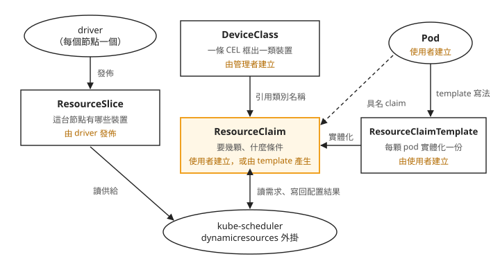
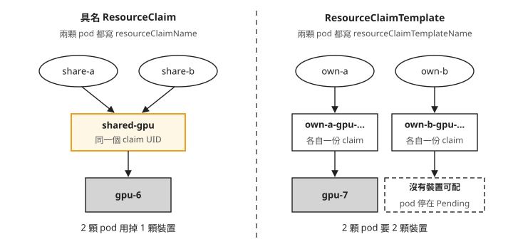

Day 6: DRA 基礎——用模擬裝置學 ResourceClaim、DeviceClass 與 CEL¶
假設你要替一個推論服務寫 pod，需求是「VRAM 40Gi 以上的卡，而且不要舊的那一批型號」。打開 resources.limits，你能寫的只有一行 nvidia.com/gpu: 1。這一格只放得下一個整數，「多大」「哪一型」都沒有地方寫。
這一章介紹 Kubernetes 裡另一種要裝置的寫法：Dynamic Resource Allocation（DRA，動態資源配置）。我們不開真卡，改用官方的模擬 driver 在一台 CPU 節點上變出幾顆假的 GPU，把「挑符合條件的裝置」「排除某個型號」「兩顆 pod 共用同一顆裝置」都實際做一次。
讀完之後，你能判斷裝置條件該由管理者統一定義，還是由個別工作提出，也能選擇讓兩顆 pod 共用一顆裝置，或各自取得裝置的寫法。
整數寫不出條件¶
Day 0 到 Day 5 用的都是 device plugin 的做法：節點回報「我有幾個 nvidia.com/gpu」，pod 在 resources.limits 寫要幾個，排程器做減法。這套做法能回答「幾顆」，回答不了「哪一顆」。
Day 3 已經碰過這個限制。為了表達「我只要 4 GB」，HAMi 另外發明了 nvidia.com/gpumem 這個資源名稱，再加一支攔在 CUDA 前面的函式庫才擋得住超用（Day 3）。挑 VRAM 大於某個門檻的卡、排掉某一型、讓兩顆 pod 明確共用同一顆，在 device plugin 的寫法裡都只能靠節點標籤、annotation 或自訂資源名稱繞過去。
DRA 換了一個做法：裝置不再是節點上的一個數字，而是一個個帶著屬性的 API 物件。pod 可以用條件挑裝置，也可以用名字指定要跟誰共用。DRA 的核心在 Kubernetes 1.34 正式發佈（GA），API 群組是 resource.k8s.io/v1。
為什麼用一台 CPU 節點就夠¶
這一章用的 driver 是 kubernetes-sigs/dra-example-driver v0.4.0。它管的裝置是模擬出來的，不碰任何硬體，設定 numDevices: 8 就會回報八顆。
模擬裝置學得到東西，是因為 DRA 從頭到尾的流程跟真卡一樣：driver 回報裝置、使用者寫條件、排程器挑一顆、節點上的 driver 把裝置交給容器。唯一的差別在最後一步：真卡要把 /dev/nvidia* 和函式庫掛進容器，模擬裝置只放進幾個環境變數。這一章要學的是前面那一整段。
你需要 Day 0 建好的 AKS，以及一個只有一台 CPU 節點的 spot 節點池 drasim（spot 是 Day 0 用過的折扣 VM，Azure 需要容量時可能把它收回）。步驟 1 會建立這個節點池，完成練習後再刪除；本章不需要 GPU 節點。
步驟 1:先確認映像拉得到，再開節點¶
先把 driver 的原始碼 clone 下來，使用這一章的 v0.4.0 tag。安裝用的 chart 和後面要讀的原始碼都在裡面。後續指令都在 dra-example-driver 目錄執行，chart 的相對路徑是 ./deployments/helm/dra-example-driver：
git clone --branch v0.4.0 --depth 1 https://github.com/kubernetes-sigs/dra-example-driver.git
cd dra-example-driver
這個 driver 用 Helm 安裝：Helm 是 Kubernetes 的套件管理工具，chart 是它的安裝套件，chart 裡的 values.yaml 是預設設定值，安裝時可以用自己的值檔覆蓋。chart 放在 deployments/helm/dra-example-driver/，它的 values.yaml 寫的倉庫位址是 registry.k8s.io/dra-example-driver/dra-example-driver，tag 留空時取 Chart.yaml 的 appVersion（v0.4.0）。不必真的把映像拉下來，直接向 registry 要這個 tag 的 manifest 就知道它存不存在：
$ curl -sSL -o /dev/null -w "%{http_code} %{content_type}\n" \
"https://registry.k8s.io/v2/dra-example-driver/dra-example-driver/manifests/v0.4.0" \
-H "Accept: application/vnd.oci.image.index.v1+json, application/vnd.docker.distribution.manifest.list.v2+json"
200 application/vnd.docker.distribution.manifest.list.v2+json
200 表示映像存在，而且不用登入就拿得到。回來的類型是 manifest list，也就是一份索引，列出同一個映像在不同 CPU 架構（這裡是 amd64、arm64、ppc64le）各自的版本，節點會自己挑對的那一份。
確定映像沒問題，再開節點池。規格照 Day 0，只是換成 CPU 機型：
$ az aks nodepool add -g <resource-group> --cluster-name <cluster> -n drasim \
--subscription <subscription-id> --node-count 1 --node-vm-size Standard_D2as_v5 \
--priority Spot --eviction-policy Delete --spot-max-price -1 --labels pool=drasim --no-wait
16:02:01 下達 add
16:03:53 節點 Ready(1 分 52 秒):aks-drasim-30601265-vmss000000 v1.35.6
labels: pool=drasim / kubernetes.azure.com/scalesetpriority=spot
taints: kubernetes.azure.com/scalesetpriority=spot:NoSchedule
allocatable: cpu=1900m memory=5930728Ki pods=250
輸出裡要記下的是標籤 pool=drasim 和 spot 的 taint。後面所有 nodeSelector 與 toleration 都照這兩項寫。
步驟 2:裝 driver，讀出第一份 ResourceSlice¶
先寫安裝值。image 指定映像來源與版本，kubeletPlugin.numDevices 設定每個節點模擬幾顆裝置，nodeSelector 與 tolerations 讓 driver 排到帶有 spot taint 的 drasim 節點。
值檔裡有幾行註解提到 DRA 開頭的名字，例如 DRAConsumableCapacity。這些是 DRA 周邊功能的開關名稱：BETA=1 表示這項功能在 beta 階段，而且這座叢集有開；which is 0 表示沒開。註解寫 0 的，表示它依賴的功能在這座叢集沒開，所以把對應的設定關掉。步驟 3 會實際查出這些開關的狀態：
cat > 01-dra-driver-values.yaml <<'EOF'
deviceProfile: "gpu"
image:
repository: registry.k8s.io/dra-example-driver/dra-example-driver
tag: "v0.4.0"
pullPolicy: IfNotPresent
gpuDeviceStatus: true # DRAResourceClaimDeviceStatus is BETA=1 here
gpuAllowMultipleAllocations: false # needs DRAConsumableCapacity, which is 0
deviceClass:
extendedResourceName: "" # needs DRAExtendedResource, which is 0
kubeletPlugin:
numDevices: 8
gpuPartitions: 0 # needs DRAPartitionableDevices, which is 0
nodeSelector:
pool: drasim
tolerations:
- key: kubernetes.azure.com/scalesetpriority
operator: Equal
value: spot
effect: NoSchedule
containers:
plugin:
resources:
requests:
cpu: 50m
memory: 64Mi
controller:
plugins: []
webhook:
enabled: false
EOF
另外兩個設定值得說明：
controller.plugins: []是 chart 的預設值。chart 的 controller 模板外層包著{{- if .Values.controller.plugins }}，清單是空的就整份不產生。這個 controller 只用在一項這座叢集沒開的試驗功能上，DRA 本身不需要它。所以整套 driver 只剩一個 DaemonSet，每個drasim節點跑一份。numDevices: 8是每個節點各模擬 8 顆。
$ helm install dra-example-driver ./deployments/helm/dra-example-driver \
-n dra-example-driver --create-namespace \
-f 01-dra-driver-values.yaml --wait --timeout 5m
16:04:22 → 16:04:29(7 秒) STATUS: deployed REVISION: 1
$ kubectl -n dra-example-driver get pods -o wide
dra-example-driver-kubeletplugin-dfqb4 1/1 Running aks-drasim-30601265-vmss000000
$ kubectl get deviceclass ; kubectl get resourceslices
gpu.example.com 35s
NAME NODE DRIVER POOL
00000-gpu.example.com-aks-drasim-…-fffzn aks-drasim-30601265-vmss000000 gpu.example.com aks-drasim-…
裝完之後，叢集裡多了兩種新物件，我們一個一個看。
第一個是 gpu.example.com 這個 DeviceClass，意思是「一類裝置」。chart 建的這一個，內容只有一行條件：device.driver == 'gpu.example.com'，也就是「這個 driver 回報的裝置都算這一類」。這行條件的寫法叫 CEL（Common Expression Language），一種只用來寫判斷條件的小型運算式語言，Kubernetes 用它在 API 物件裡描述「哪些東西符合條件」。步驟 4b 會自己寫幾條。
第二個是 ResourceSlice，driver 在節點上跑起來之後自己回報的裝置清單：這台節點有哪些裝置，每一顆有什麼屬性、多少容量。它取代的是 device plugin 時代節點上那個整數。下面節錄第一顆裝置和開頭的清單資訊，其他七顆結構相同：
spec:
driver: gpu.example.com
nodeName: aks-drasim-30601265-vmss000000
pool: { generation: 1, name: aks-drasim-30601265-vmss000000, resourceSliceCount: 1 }
devices:
- name: gpu-0
attributes:
driverVersion: { version: 1.0.0 }
index: { int: 0 }
model: { string: LATEST-GPU-MODEL }
uuid: { string: gpu-a6fe3131-… }
capacity: { compute: { value: "100" }, memory: { value: 80Gi } }
每顆裝置有兩組資料：attributes 是描述性的屬性（型號、版本、編號），capacity 是可以比大小的容量（記憶體、算力）。後面寫條件時，挑的就是這些欄位。把八顆的內容整理成表，最右欄是在 CEL 裡怎麼引用。後面的示範只會用到 model、memory 和 driver 三列，其他幾列列出來供參考：
| 位置 | 鍵 | 型別 | 值 | CEL 寫法 |
|---|---|---|---|---|
attributes |
index |
int | 0–7 | device.attributes['gpu.example.com'].index |
attributes |
uuid |
string | gpu-<uuid>,每顆不同 |
device.attributes['gpu.example.com'].uuid |
attributes |
model |
string | LATEST-GPU-MODEL(全部一樣) |
device.attributes['gpu.example.com'].model |
attributes |
driverVersion |
version | 1.0.0(全部一樣) |
device.attributes['gpu.example.com'].driverVersion |
capacity |
memory |
quantity | 80Gi(全部一樣) |
device.capacity['gpu.example.com'].memory |
capacity |
compute |
quantity | 100(全部一樣) |
device.capacity['gpu.example.com'].compute |
| 內建欄位 | driver |
string | driver 名 | device.driver |
注意 CEL 寫法中括號裡的 'gpu.example.com'：屬性和容量的鍵前面都掛著 driver 的名字，叫做「網域」。這樣同一台節點上有兩個 driver 時，各自的 model 不會撞名。下一步就要用到這件事。
步驟 3:八顆一模一樣，換一個 driver 名再裝一次¶
看上面那張表的「值」欄：八顆裝置只有 index 和 uuid 不同，型號、記憶體、算力全部一樣。拿這樣的裝置練習「挑 VRAM 大的」「排除舊型號」，條件寫得出來，卻分不出任何一顆。
原因在 driver 原始碼：internal/profiles/gpu/gpu.go 裡記憶體固定 80Gi、算力固定 100，屬性表的型號和版本也是常數：
"model": { StringValue: ptr.To("LATEST-GPU-MODEL") }, // constant
"driverVersion": { VersionValue: ptr.To("1.0.0") }, // constant
chart 裡倒是有能做出差異的設定，例如 kubeletPlugin.gpuPartitions 會把一顆切成幾份，每一份的記憶體比整顆小。可是它就是步驟 2 值檔裡被關掉的那一行。為什麼要關？
查這座叢集開了哪些試驗功能¶
Kubernetes 的新功能會依序經過 alpha（試驗，預設關閉）、beta、GA（正式）幾個階段。還沒正式的功能由 feature gate 控制，它是 Kubernetes 元件啟動時的功能開關。DRA 的核心已經 GA，但以本課程的叢集（AKS 1.35.6）來看，周邊有一大半功能還在 alpha。
自己架的叢集要打開這些功能，通常得在 apiserver、kube-scheduler、kubelet 等元件上都開啟對應的 feature gate，有些功能還要另外啟用對應的 API 版本。託管的 AKS 不讓你改這些設定：看不到 apiserver 的 pod，也看不到它的啟動參數。能問出真實狀態的地方，是 apiserver 的 metrics 端點。下面是在 AKS 1.35.6 上的輸出：
$ kubectl get --raw /metrics | grep 'kubernetes_feature_enabled' | grep -i DRA | sort
kubernetes_feature_enabled{name="DRAAdminAccess",stage="BETA"} 1
kubernetes_feature_enabled{name="DRAConsumableCapacity",stage="ALPHA"} 0
kubernetes_feature_enabled{name="DRADeviceBindingConditions",stage="ALPHA"} 0
kubernetes_feature_enabled{name="DRADeviceTaintRules",stage="ALPHA"} 0
kubernetes_feature_enabled{name="DRADeviceTaints",stage="ALPHA"} 0
kubernetes_feature_enabled{name="DRAExtendedResource",stage="ALPHA"} 0
kubernetes_feature_enabled{name="DRAPartitionableDevices",stage="ALPHA"} 0
kubernetes_feature_enabled{name="DRAPrioritizedList",stage="BETA"} 1
kubernetes_feature_enabled{name="DRAResourceClaimDeviceStatus",stage="BETA"} 1
kubernetes_feature_enabled{name="DRASchedulerFilterTimeout",stage="BETA"} 1
每一行是一個功能，最後的 1 或 0 表示開或關。規律很清楚：BETA 的都是 1，ALPHA 的都是 0。拿這張表對照 chart 的設定，能做出差異的三個設定，在 AKS 1.35.6 上剛好都卡在 alpha：
| 設定 | 效果 | 依賴的功能 |
|---|---|---|
kubeletPlugin.gpuPartitions |
一顆切成 N 份,partition 與整顆的 memory 不同 | DRAPartitionableDevices |
gpuAllowMultipleAllocations |
裝置可被多個 claim 依容量分食 | DRAConsumableCapacity |
deviceClass.extendedResourceName |
讓 pod 用 resources.limits 要裝置 |
DRAExtendedResource |
第一行的 partition 是把一顆裝置切成幾份；第二行是多個 claim 按容量分用同一顆裝置。三個在這座叢集上都用不了。還能用的是 gpuDeviceStatus，它依賴的 DRAResourceClaimDeviceStatus 是 beta、已開啟，作用是讓 driver 把裝置資訊寫回 claim。
在託管叢集上做 DRA，這張表最好在設計示範或規劃功能之前就先查。先裝再查的話，想做的事多半做不了，而且失敗的樣子常常是「設定寫了，什麼都沒發生」。
把差異做在 driver 這一層¶
裝置層做不出差異，就利用步驟 2 最後提到的網域。chart 有一個 driverName 設定，沒寫時用預設的 gpu.example.com，它同時決定 driver 名、屬性網域和 chart 建立的 DeviceClass 名稱。同一份 chart、同一種模擬裝置，只把 driverName 換成 retro-gpu.example.com、裝置數改成 3，再裝一次。新 driver 的裝置屬性掛在另一個網域下，等於多了一批「另一個廠牌」的卡。
第二份值檔跟第一份只差三處：多一行 driverName、裝置數改成 3、拿掉兩個本來就用不上的 alpha 設定。
cat > 02-dra-driver-retro-values.yaml <<'EOF'
deviceProfile: "gpu"
driverName: "retro-gpu.example.com"
image:
repository: registry.k8s.io/dra-example-driver/dra-example-driver
tag: "v0.4.0"
pullPolicy: IfNotPresent
gpuDeviceStatus: true
kubeletPlugin:
numDevices: 3
nodeSelector:
pool: drasim
tolerations:
- key: kubernetes.azure.com/scalesetpriority
operator: Equal
value: spot
effect: NoSchedule
containers:
plugin:
resources:
requests:
cpu: 50m
memory: 64Mi
controller:
plugins: []
webhook:
enabled: false
EOF
裝好之後，把兩個 driver 的裝置一起列出來：
$ helm install retro-gpu … -f 02-dra-driver-retro-values.yaml --wait
16:05:42 STATUS: deployed
$ kubectl get resourceslices -o json | jq -r '.items[] | .spec.driver as $d |
.spec.devices[] | "\($d)\t\(.name)\tmodel=\(.attributes.model.string)\tmem=\(.capacity.memory.value)"'
gpu.example.com gpu-0 … gpu-7 model=LATEST-GPU-MODEL mem=80Gi (8 顆)
retro-gpu.example.com gpu-0 … gpu-2 model=LATEST-GPU-MODEL mem=80Gi (3 顆)
同一台節點上現在有 11 顆裝置、2 個 driver、2 個 DeviceClass。我們可以看到兩個 driver 的裝置名字都有 gpu-0。DRA 用 driver、pool、裝置名三個欄位一起識別一顆裝置，名字只在同一個 pool 裡唯一，所以後面 claim 的配置結果裡，這三個欄位永遠一起出現。
兩個 driver 能在同一台節點上並存，有兩個原因：DaemonSet 沒有用 hostNetwork（templates/kubeletplugin.yaml 裡沒有這個欄位），所以兩份 metrics 的 8080 port 不會撞；driver 名透過 DRIVER_NAME 環境變數傳進去，兩份各自用不同名字向 kubelet 註冊。
步驟 4:六組示範，把核心 API 走一遍¶
接下來的測試 pod 都固定在 drasim 上（nodeSelector: pool=drasim 加 spot toleration）。映像用 registry.k8s.io/e2e-test-images/busybox:1.36.1-1，避開 Docker Hub 的拉取次數限制。容器一啟動先執行 env | sort，再用 sleep 9999 & wait 保持執行，所以 driver 往容器裡放了什麼，看 pod log 就知道。
4a. 最小可行：一份 template、一顆 pod、一顆裝置¶
有了供給（ResourceSlice）和分類（DeviceClass），還缺需求這一端：pod 要怎麼說「我要一顆」。這個需求物件叫 ResourceClaim，內容是要幾顆、要什麼樣的。ResourceClaim 可以由使用者直接建立，也可以由 ResourceClaimTemplate（一份需求的範本）替每顆 pod 各產生一份。先看這幾種物件之間的關係，每個方框最下面一行寫著它由誰建立：

照著圖看：
- ResourceSlice 由 driver 發佈，使用者不會去改它。
- DeviceClass 由管理者建立，決定這座叢集有哪幾類裝置可以要。
- ResourceClaim、ResourceClaimTemplate 和 Pod 都在使用者這一端。pod 可以寫 template，讓每顆 pod 各產生一份 claim；也可以直接引用一份事先建好的具名 claim（虛線）。4e 會比較這兩種寫法。
- 排程器的
dynamicresources外掛把供給和需求對起來，挑好之後寫回 claim 的 status。
pod 這一端的寫法分兩段：pod 層的 spec.resourceClaims 宣告這顆 pod 會用到哪些 claim、各從哪來；容器層的 resources.claims 再按名字引用，表示哪個容器要用。下面是完整的檔案，裡面有三個物件：一個 namespace、一份只說「從 gpu.example.com 這一類裡要一顆」的 ResourceClaimTemplate，以及引用它的 pod0。pod 除了上面講的兩段，還照步驟 1 的標籤和 taint 寫了 nodeSelector 與 toleration；容器一啟動先執行 env | sort 把環境變數印到 log，再用 sleep 9999 & wait 保持執行：
cat > 03-a-basic-claimtemplate.yaml <<'EOF'
apiVersion: v1
kind: Namespace
metadata:
name: dra-3a
---
apiVersion: resource.k8s.io/v1
kind: ResourceClaimTemplate
metadata:
namespace: dra-3a
name: single-gpu
spec:
spec:
devices:
requests:
- name: gpu
exactly:
deviceClassName: gpu.example.com
---
apiVersion: v1
kind: Pod
metadata:
namespace: dra-3a
name: pod0
spec:
nodeSelector:
pool: drasim
tolerations:
- key: kubernetes.azure.com/scalesetpriority
operator: Equal
value: spot
effect: NoSchedule
containers:
- name: ctr0
image: registry.k8s.io/e2e-test-images/busybox:1.36.1-1
command: ["sh", "-c"]
args: ["env | sort; trap 'exit 0' TERM; sleep 9999 & wait"]
resources:
claims:
- name: gpu
resourceClaims:
- name: gpu
resourceClaimTemplateName: single-gpu
EOF
kubectl apply -f 03-a-basic-claimtemplate.yaml
套用之後，看 pod 和 claim：
$ kubectl -n dra-3a get pods,resourceclaims
pod/pod0 1/1 Running
resourceclaim/pod0-gpu-mpm8x allocated,reserved
pod0 在跑，namespace 裡也多出一份叫 pod0-gpu-mpm8x 的 ResourceClaim，狀態是 allocated,reserved。檔案裡沒有寫這份 claim，它的名字由 <pod 名>-<claim 名>-<隨機碼> 組成：template 不會被 pod 直接使用，而是每顆 pod 照著它產生一份自己的 ResourceClaim。
這份 claim 的 status 記著配置的結果：
status:
allocation: # written by the scheduler
devices:
results:
- { device: gpu-0, driver: gpu.example.com, pool: aks-drasim-…, request: gpu }
nodeSelector: # the claim is now pinned to this node
nodeSelectorTerms:
- matchFields:
- { key: metadata.name, operator: In, values: [ aks-drasim-30601265-vmss000000 ] }
devices: # written by the driver, needs gpuDeviceStatus
- device: gpu-0
driver: gpu.example.com
data: { driverVersion: { version: 1.0.0 }, model: { string: LATEST-GPU-MODEL }, uuid: { string: gpu-a6fe3131-… } }
reservedFor: # who currently holds it
- { name: pod0, resource: pods }
現在只要看兩處：allocation 是排程器寫的，記著配到哪一顆，driver、pool、裝置名三個欄位一起出現；reservedFor 記著現在是誰在用這份 claim，4e 會用到它。中間的 devices 是 driver 寫回的裝置資訊，就是步驟 3 留下的 gpuDeviceStatus 開關的作用。
裝置怎麼進到容器裡？pod0 啟動時印出了所有環境變數，用 kubectl logs 加 grep 挑出跟裝置有關的幾行：
$ kubectl -n dra-3a logs pod0 | grep -E 'GPU_DEVICE|DRA_RESOURCE'
DRA_RESOURCE_DRIVER_NAME=gpu.example.com
GPU_DEVICE_0=gpu-0
GPU_DEVICE_0_SHARING_STRATEGY=TimeSlicing
GPU_DEVICE_0_TIMESLICE_INTERVAL=Default
GPU_DEVICE_GPU_0_RESOURCE_CLAIM=f8bb6f0b-…
這幾行都不是 03-a 檔案裡寫的（檔案裡沒有任何 env），是 driver 在容器啟動前放進去的：
GPU_DEVICE_0=gpu-0：配給這個容器的裝置，就是 claim status 裡的gpu-0。GPU_DEVICE_0_SHARING_STRATEGY、GPU_DEVICE_0_TIMESLICE_INTERVAL：模擬裝置的共用方式設定。GPU_DEVICE_GPU_0_RESOURCE_CLAIM：這顆裝置屬於哪一份 claim，值是那份 claim 的 UID（Kubernetes 替每個物件產生的唯一識別碼）。DRA_RESOURCE_DRIVER_NAME：放進這些變數的 driver。
driver 是透過 CDI（Container Device Interface，描述「要讓容器用某個裝置，得對容器做哪些修改」的規格）把這些變數放進去的。模擬 driver 放的是環境變數；真卡的 driver 用同一個機制把 /dev/nvidia* 和函式庫掛進容器，Day 7 再細看。
4b. 用 CEL 設門檻：一個挑得到，一個挑不到¶
現在回到開場的需求：「VRAM 40Gi 以上」。接下來依序套用 4b 到 4e 的檔案，保留前面已建立的物件，讓後續結果對應累積的裝置配置。條件寫在 claim 的 request 裡，用的是步驟 2 看過的 CEL。排程器會拿每一顆候選裝置代入運算式算一次，結果是 true 的才留下。
下面兩份 template 只差一個數字。比較記憶體大小要用 Kubernetes 為 CEL 加的 quantity() 和 .compareTo()，quantity 不能直接跟字串比，不能寫成 >= '40Gi'，要先用 quantity('40Gi') 轉型，再用 compareTo 比較：
將以下內容存成 03-b-cel-memory.yaml，再套用：
apiVersion: v1
kind: Namespace
metadata:
name: dra-3b
---
apiVersion: resource.k8s.io/v1
kind: ResourceClaimTemplate
metadata:
namespace: dra-3b
name: gpu-mem-40gi
spec:
spec:
devices:
requests:
- name: gpu
exactly:
deviceClassName: gpu.example.com
selectors:
- cel:
expression: "device.capacity['gpu.example.com'].memory.compareTo(quantity('40Gi')) >= 0"
---
apiVersion: resource.k8s.io/v1
kind: ResourceClaimTemplate
metadata:
namespace: dra-3b
name: gpu-mem-160gi
spec:
spec:
devices:
requests:
- name: gpu
exactly:
deviceClassName: gpu.example.com
selectors:
- cel:
expression: "device.capacity['gpu.example.com'].memory.compareTo(quantity('160Gi')) >= 0"
---
apiVersion: v1
kind: Pod
metadata:
namespace: dra-3b
name: pod-ok
spec:
nodeSelector: {pool: drasim}
tolerations:
- {key: kubernetes.azure.com/scalesetpriority, operator: Equal, value: spot, effect: NoSchedule}
containers:
- name: ctr0
image: registry.k8s.io/e2e-test-images/busybox:1.36.1-1
command: ["sh", "-c"]
args: ["env | sort; trap 'exit 0' TERM; sleep 9999 & wait"]
resources:
claims: [{name: gpu}]
resourceClaims:
- name: gpu
resourceClaimTemplateName: gpu-mem-40gi
---
apiVersion: v1
kind: Pod
metadata:
namespace: dra-3b
name: pod-impossible
spec:
nodeSelector: {pool: drasim}
tolerations:
- {key: kubernetes.azure.com/scalesetpriority, operator: Equal, value: spot, effect: NoSchedule}
containers:
- name: ctr0
image: registry.k8s.io/e2e-test-images/busybox:1.36.1-1
command: ["sh", "-c"]
args: ["env | sort; trap 'exit 0' TERM; sleep 9999 & wait"]
resources:
claims: [{name: gpu}]
resourceClaims:
- name: gpu
resourceClaimTemplateName: gpu-mem-160gi
每顆裝置都是 80Gi，所以第一份八顆都合格，第二份一顆都不合格。兩顆 pod 各用一份：
$ kubectl -n dra-3b get pods,resourceclaims
pod/pod-ok 1/1 Running resourceclaim/pod-ok-gpu-j2fhr allocated,reserved → gpu-1
pod/pod-impossible 0/1 Pending resourceclaim/pod-impossible-gpu-kh2gk pending → (無)
$ kubectl -n dra-3b describe pod pod-impossible | tail -5
Warning FailedScheduling default-scheduler
0/2 nodes are available: 1 cannot allocate all claims,
1 node(s) didn't match Pod's node affinity/selector.
still not schedulable, preemption: 0/2 nodes are available:
2 Preemption is not helpful for scheduling.
pod-ok 拿到 gpu-1；pod-impossible 停在 Pending。注意它的事件：drasim 那台節點的理由只有 cannot allocate all claims 一句，沒說是哪個 claim、哪一條條件、篩掉了幾顆。條件打錯字跟裝置真的不夠，事件會長得一模一樣，怎麼追查見疑難排解：cannot allocate all claims。
4c. 排除式條件：把某一型整批篩掉¶
開場需求的後半是「不要舊的那一批」。步驟 3 造出的 retro-gpu.example.com 正好扮演舊型號。
要讓同一個需求同時看得到兩個 driver 的裝置，先自建一個跨 driver 的 DeviceClass mixed-gpu.example.com，條件寫 device.driver == 'gpu.example.com' || device.driver == 'retro-gpu.example.com'。再用三顆 pod 各測一種排除寫法：
| pod | 選擇器 | 預期 | 實際 |
|---|---|---|---|
pod-not-retro |
mixed 類別加 device.driver != 'retro-gpu.example.com' |
只能拿到新型號 | Running,配到 gpu.example.com/gpu-2 |
pod-not-bleeding-edge |
model != 'BLEEDING-EDGE-GPU'(排掉不存在的型號) |
8 顆全合格 | Running,配到 gpu-3 |
pod-not-latest |
model != 'LATEST-GPU-MODEL'(排掉唯一存在的型號) |
全被排掉 | Pending |
將以下內容存成 03-c-cel-exclude.yaml，再套用：
apiVersion: resource.k8s.io/v1
kind: DeviceClass
metadata:
name: mixed-gpu.example.com
spec:
selectors:
- cel:
expression: "device.driver == 'gpu.example.com' || device.driver == 'retro-gpu.example.com'"
---
apiVersion: v1
kind: Namespace
metadata:
name: dra-3c
---
apiVersion: resource.k8s.io/v1
kind: ResourceClaimTemplate
metadata:
namespace: dra-3c
name: not-retro
spec:
spec:
devices:
requests:
- name: gpu
exactly:
deviceClassName: mixed-gpu.example.com
selectors:
- cel:
expression: "device.driver != 'retro-gpu.example.com'"
---
apiVersion: resource.k8s.io/v1
kind: ResourceClaimTemplate
metadata:
namespace: dra-3c
name: not-bleeding-edge
spec:
spec:
devices:
requests:
- name: gpu
exactly:
deviceClassName: gpu.example.com
selectors:
- cel:
expression: "device.attributes['gpu.example.com'].model != 'BLEEDING-EDGE-GPU'"
---
apiVersion: resource.k8s.io/v1
kind: ResourceClaimTemplate
metadata:
namespace: dra-3c
name: not-latest
spec:
spec:
devices:
requests:
- name: gpu
exactly:
deviceClassName: gpu.example.com
selectors:
- cel:
expression: "device.attributes['gpu.example.com'].model != 'LATEST-GPU-MODEL'"
---
apiVersion: v1
kind: Pod
metadata: {namespace: dra-3c, name: pod-not-retro}
spec:
nodeSelector: {pool: drasim}
tolerations:
- {key: kubernetes.azure.com/scalesetpriority, operator: Equal, value: spot, effect: NoSchedule}
containers:
- name: ctr0
image: registry.k8s.io/e2e-test-images/busybox:1.36.1-1
command: ["sh", "-c"]
args: ["env | sort; trap 'exit 0' TERM; sleep 9999 & wait"]
resources: {claims: [{name: gpu}]}
resourceClaims:
- {name: gpu, resourceClaimTemplateName: not-retro}
---
apiVersion: v1
kind: Pod
metadata: {namespace: dra-3c, name: pod-not-bleeding-edge}
spec:
nodeSelector: {pool: drasim}
tolerations:
- {key: kubernetes.azure.com/scalesetpriority, operator: Equal, value: spot, effect: NoSchedule}
containers:
- name: ctr0
image: registry.k8s.io/e2e-test-images/busybox:1.36.1-1
command: ["sh", "-c"]
args: ["env | sort; trap 'exit 0' TERM; sleep 9999 & wait"]
resources: {claims: [{name: gpu}]}
resourceClaims:
- {name: gpu, resourceClaimTemplateName: not-bleeding-edge}
---
apiVersion: v1
kind: Pod
metadata: {namespace: dra-3c, name: pod-not-latest}
spec:
nodeSelector: {pool: drasim}
tolerations:
- {key: kubernetes.azure.com/scalesetpriority, operator: Equal, value: spot, effect: NoSchedule}
containers:
- name: ctr0
image: registry.k8s.io/e2e-test-images/busybox:1.36.1-1
command: ["sh", "-c"]
args: ["env | sort; trap 'exit 0' TERM; sleep 9999 & wait"]
resources: {claims: [{name: gpu}]}
resourceClaims:
- {name: gpu, resourceClaimTemplateName: not-latest}
三份 claim 實際配到的裝置：
$ kubectl -n dra-3c get resourceclaims -o json | jq -r '.items[] |
"\(.metadata.name)\t\(.status.allocation.devices.results // [] | map("\(.driver)/\(.device)") | join(","))"'
pod-not-bleeding-edge-gpu-xfs9w gpu.example.com/gpu-3
pod-not-latest-gpu-rpcd4 (空)
pod-not-retro-gpu-24pkg gpu.example.com/gpu-2
最值得看的是 pod-not-retro：它的候選裝置有 11 顆，其中 3 顆屬於被排除的 driver，最後配到的 gpu-2 落在合格的 8 顆裡。不必先替節點貼標籤，也不必把不同型號的卡拆到不同節點池，一條 CEL 就在裝置層級挑完。device plugin 的寫法要做同一件事，只能靠 nodeSelector 挑節點，最細只到節點。
到這裡可以回答一個設計問題：條件該寫在 DeviceClass 還是 claim？DeviceClass 是叢集層級的物件，由管理者定義「這座叢集有哪幾類裝置」，例如 mixed-gpu.example.com 把兩個 driver 的裝置收成一類，所有引用它的人都受這個條件約束。claim 裡的條件只屬於這一次需求，例如 4b 的記憶體門檻、這裡的排除 retro。多數使用者共用的條件放 DeviceClass，某個工作自己的條件放 claim。要注意，DeviceClass 本身不會強制任何人：使用者可以改引用別的類別。要讓條件真的生效，管理者還得控制叢集裡有哪些 DeviceClass 可以用。
4d. 一個 request 要兩顆¶
在 exactly 裡加上 allocationMode: ExactCount 和 count: 2，一個 request 就會要兩顆：
將以下內容存成 03-d-multi-device.yaml，再套用：
apiVersion: v1
kind: Namespace
metadata:
name: dra-3d
---
apiVersion: resource.k8s.io/v1
kind: ResourceClaimTemplate
metadata:
namespace: dra-3d
name: two-gpus
spec:
spec:
devices:
requests:
- name: gpus
exactly:
deviceClassName: gpu.example.com
allocationMode: ExactCount
count: 2
---
apiVersion: v1
kind: Pod
metadata: {namespace: dra-3d, name: pod-two}
spec:
nodeSelector: {pool: drasim}
tolerations:
- {key: kubernetes.azure.com/scalesetpriority, operator: Equal, value: spot, effect: NoSchedule}
containers:
- name: ctr0
image: registry.k8s.io/e2e-test-images/busybox:1.36.1-1
command: ["sh", "-c"]
args: ["env | sort; trap 'exit 0' TERM; sleep 9999 & wait"]
resources: {claims: [{name: gpus}]}
resourceClaims:
- {name: gpus, resourceClaimTemplateName: two-gpus}
套用後，查看配置結果與容器 log：
$ kubectl -n dra-3d get resourceclaims -o json | jq …
pod-two-gpus-q6z79 gpu.example.com/gpu-4@req=gpus,gpu.example.com/gpu-5@req=gpus
$ kubectl -n dra-3d logs pod-two | grep GPU_DEVICE
GPU_DEVICE_4=gpu-4
GPU_DEVICE_4_SHARING_STRATEGY=TimeSlicing
GPU_DEVICE_4_TIMESLICE_INTERVAL=Default
GPU_DEVICE_5=gpu-5
GPU_DEVICE_5_SHARING_STRATEGY=TimeSlicing
GPU_DEVICE_5_TIMESLICE_INTERVAL=Default
GPU_DEVICE_GPU_4_RESOURCE_CLAIM=7ba5eeb3-…
GPU_DEVICE_GPU_5_RESOURCE_CLAIM=7ba5eeb3-…
兩顆不同的裝置（gpu-4、gpu-5）屬於同一個 claim UID，兩筆配置結果的 request 欄位都是 gpus。這是一個 request 依 count 展開成兩筆，不是兩個 request。
4e. 共享與獨佔並排比較¶
4a 提過 pod 有兩種方式拿到 claim。這一組把兩種寫法並排跑：
- 左邊先建一份具名 ResourceClaim
shared-gpu，也就是使用者自己建立、有固定名字的 claim。兩顆 pod 都寫resourceClaimName: shared-gpu。 - 右邊是一份 ResourceClaimTemplate，兩顆 pod 都寫
resourceClaimTemplateName，各自產生一份。
將以下內容存成 03-e-sharing.yaml，再套用：
apiVersion: v1
kind: Namespace
metadata:
name: dra-3e
---
apiVersion: resource.k8s.io/v1
kind: ResourceClaim
metadata:
namespace: dra-3e
name: shared-gpu
spec:
devices:
requests:
- name: gpu
exactly:
deviceClassName: gpu.example.com
---
apiVersion: v1
kind: Pod
metadata: {namespace: dra-3e, name: share-a}
spec:
nodeSelector: {pool: drasim}
tolerations:
- {key: kubernetes.azure.com/scalesetpriority, operator: Equal, value: spot, effect: NoSchedule}
containers:
- name: ctr0
image: registry.k8s.io/e2e-test-images/busybox:1.36.1-1
command: ["sh", "-c"]
args: ["env | sort; trap 'exit 0' TERM; sleep 9999 & wait"]
resources: {claims: [{name: gpu}]}
resourceClaims:
- {name: gpu, resourceClaimName: shared-gpu}
---
apiVersion: v1
kind: Pod
metadata: {namespace: dra-3e, name: share-b}
spec:
nodeSelector: {pool: drasim}
tolerations:
- {key: kubernetes.azure.com/scalesetpriority, operator: Equal, value: spot, effect: NoSchedule}
containers:
- name: ctr0
image: registry.k8s.io/e2e-test-images/busybox:1.36.1-1
command: ["sh", "-c"]
args: ["env | sort; trap 'exit 0' TERM; sleep 9999 & wait"]
resources: {claims: [{name: gpu}]}
resourceClaims:
- {name: gpu, resourceClaimName: shared-gpu}
---
apiVersion: resource.k8s.io/v1
kind: ResourceClaimTemplate
metadata: {namespace: dra-3e, name: own-gpu}
spec:
spec:
devices:
requests:
- name: gpu
exactly:
deviceClassName: gpu.example.com
---
apiVersion: v1
kind: Pod
metadata: {namespace: dra-3e, name: own-a}
spec:
nodeSelector: {pool: drasim}
tolerations:
- {key: kubernetes.azure.com/scalesetpriority, operator: Equal, value: spot, effect: NoSchedule}
containers:
- name: ctr0
image: registry.k8s.io/e2e-test-images/busybox:1.36.1-1
command: ["sh", "-c"]
args: ["env | sort; trap 'exit 0' TERM; sleep 9999 & wait"]
resources: {claims: [{name: gpu}]}
resourceClaims:
- {name: gpu, resourceClaimTemplateName: own-gpu}
---
apiVersion: v1
kind: Pod
metadata: {namespace: dra-3e, name: own-b}
spec:
nodeSelector: {pool: drasim}
tolerations:
- {key: kubernetes.azure.com/scalesetpriority, operator: Equal, value: spot, effect: NoSchedule}
containers:
- name: ctr0
image: registry.k8s.io/e2e-test-images/busybox:1.36.1-1
command: ["sh", "-c"]
args: ["env | sort; trap 'exit 0' TERM; sleep 9999 & wait"]
resources: {claims: [{name: gpu}]}
resourceClaims:
- {name: gpu, resourceClaimTemplateName: own-gpu}
$ kubectl -n dra-3e get pods
own-a 1/1 Running own-b 0/1 Pending share-a 1/1 Running share-b 1/1 Running
$ kubectl -n dra-3e get resourceclaims -o json | jq …
own-a-gpu-z6rlc gpu-7 reservedFor=own-a
own-b-gpu-j5qrn (空) reservedFor=(空)
shared-gpu gpu-6 reservedFor=share-a,share-b
$ kubectl -n dra-3e logs share-a | grep GPU_DEVICE
GPU_DEVICE_6=gpu-6
GPU_DEVICE_GPU_6_RESOURCE_CLAIM=a88a00a8-…
$ kubectl -n dra-3e logs share-b | grep GPU_DEVICE
GPU_DEVICE_6=gpu-6
GPU_DEVICE_GPU_6_RESOURCE_CLAIM=a88a00a8-…
share-a 和 share-b 拿到同一顆 gpu-6，而且 claim UID 也相同。這不是兩份 claim 剛好配到同一顆，而是同一份 claim 的 reservedFor 裡同時記著兩顆 pod。
右邊的 own-b 為什麼 Pending？把當下全叢集的 claim 列出來就知道：
dra-3a/pod0-gpu-mpm8x gpu-0 pods=pod0
dra-3b/pod-ok-gpu-j2fhr gpu-1 pods=pod-ok
dra-3b/pod-impossible-gpu-kh2gk (空)
dra-3c/pod-not-retro-gpu-24pkg gpu-2 pods=pod-not-retro
dra-3c/pod-not-bleeding-edge-gpu-xfs9w gpu-3 pods=pod-not-bleeding-edge
dra-3c/pod-not-latest-gpu-rpcd4 (空)
dra-3d/pod-two-gpus-q6z79 gpu-4, gpu-5 pods=pod-two
dra-3e/shared-gpu gpu-6 pods=share-a, share-b ← 2 顆 pod 吃 1 顆
dra-3e/own-a-gpu-z6rlc gpu-7 pods=own-a ← 1 顆 pod 吃 1 顆
dra-3e/own-b-gpu-j5qrn (空) pods=(空) ← 沒得配了
gpu.example.com 的 gpu-0 到 gpu-7 全部配出去了，最後一顆 gpu-7 被 own-a 拿走，own-b 就沒得配。把 4e 這兩組畫成圖：

我們可以從圖上看到，同樣兩顆 pod，左邊只用掉一顆裝置，右邊要兩顆。差別只在 manifest 裡的一個欄位名：resourceClaimName 或 resourceClaimTemplateName。要讓兩顆 pod 共用一顆裝置，就用具名 claim；要每顆 pod 各拿各的，就用 template。
刪除 pod 前，先看節點物件¶
在 device plugin 的世界，要知道一台節點還剩幾張卡，kubectl describe node 就看得到。現在 11 顆裝置裡有 8 顆正在被用，同樣看一次節點：
$ kubectl describe node aks-drasim-30601265-vmss000000
Capacity / Allocatable: 只有 cpu、ephemeral-storage、hugepages-1Gi、hugepages-2Mi、memory、pods 六項
Non-terminated Pods: (16 in total)
Namespace Name CPU Requests CPU Limits Memory Requests Memory Limits
dra-3a pod0 0 (0%) 0 (0%) 0 (0%) 0 (0%)
dra-3b pod-ok 0 (0%) 0 (0%) 0 (0%) 0 (0%)
dra-3c/3d/3e pod-not-bleeding-edge / pod-not-retro / pod-two / own-a / share-a / share-b …
Capacity 和 Allocatable 裡沒有任何裝置，正在用裝置的 pod 在節點的資源欄位裡全部是 0 (0%)。原因是 DRA 的裝置不走 device plugin 那種「節點上的擴充資源」，根本不寫進節點物件。
4f. 生命週期：哪種 claim 會跟著 pod 消失¶
兩種寫法在刪除時也不一樣。先刪 4a 的 pod0，它的 claim 是 template 產生的：
16:09:26 $ kubectl -n dra-3a delete pod pod0
16:09:38 $ kubectl -n dra-3a get resourceclaims
No resources found in dra-3a namespace.
$ kubectl -n dra-3d get resourceclaim pod-two-gpus-q6z79 -o json | jq '{finalizers, owner}'
{ "finalizers": [ "resource.kubernetes.io/delete-protection" ],
"owner": [ { "kind": "Pod", "name": "pod-two", "controller": true } ] }
claim 跟著 pod 一起消失了，原因寫在物件上。第二個指令看的是 4d 那份同樣由 template 產生的 claim，它帶著兩樣東西：
owner是 ownerReference，記錄「這個物件屬於誰」。擁有者（這裡是 pod）被刪掉後，Kubernetes 的垃圾回收會把它一起刪除。finalizers裡的 finalizer 是物件刪除前必須先完成的清理項目，清單沒清空，物件就不會真的消失。delete-protection保證裝置先從節點上釋放，claim 才刪得掉。
gpu-0 一空出來，剛才 Pending 的 own-b 就補上了。節點上 driver 的 kubelet plugin（driver 跑在每個節點上、替 kubelet 準備和釋放裝置的那一部分）的 log 記下了整個交接過程：
08:09:27.254 "UnprepareResourceClaims is called" numClaims=1 ← pod0 走
08:09:27.699 "Preparing claim" namespace="dra-3e" name="own-b-gpu-j5qrn" ← own-b 接手
08:09:27.724 "Returning newly prepared devices for claim" devices=[{"DeviceName":"gpu-0",
"CDIDeviceIDs":["k8s.gpu.example.com/gpu=common",
"k8s.gpu.example.com/gpu=fc30f0da-…-gpu-0"]}]
照時間往下看：先釋放 pod0 的裝置，接著替 own-b 的 claim 準備裝置，最後回傳 gpu-0 和兩個 CDI 裝置 ID。這兩個 ID 一個是 common，所有裝置共用的容器修改；一個是 <claimUID>-<裝置名>，只屬於這次配置。
具名 claim 那一邊，兩顆 pod 逐一刪掉：
16:09:49 $ kubectl -n dra-3e delete pod share-a
shared-gpu gpu-6 reservedFor=share-b
16:09:58 $ kubectl -n dra-3e delete pod share-b
shared-gpu pending allocation: NULL reservedFor=(空)
刪除 share-a 後，share-b 仍在使用 shared-gpu，所以配置會保留。具名 claim 是使用者自己建的，沒有指向任何 pod 的 ownerReference，所以 pod 都刪了，物件還在。但 reservedFor 清空之後，status.allocation 變回空值、狀態回到 pending，裝置已經釋放。所以 template 產生的 claim 會隨 pod 刪除；具名 claim 則保留 API 物件，不會一直佔著裝置。
步驟 5:回頭看節點物件¶
把三種做法放在一起比較：
| 資源在節點物件上長什麼樣 | 查「誰佔了什麼」看哪裡 | |
|---|---|---|
| device plugin(Day 0／3) | Capacity 與 Allocatable 都有 nvidia.com/gpu: 1,Allocated resources 直接算給你看 |
describe node 就夠 |
| HAMi(Day 3–4) | Capacity 與 Allocatable 只有 nvidia.com/gpu 這項擴充資源,記憶體與算力規格在節點的 hami.io/node-nvidia-register annotation,配置量在 scheduler extender 記憶體與 pod annotation |
describe node 加解析 annotation 加 WebUI |
| DRA(本日) | 完全不出現,節點物件上零痕跡 | kubectl get resourceslices(供給)加 kubectl get resourceclaims -A(需求) |
Day 3 的「kubectl describe node 查不到 VRAM 餘額」只是少了一項；DRA 是整套裝置都不在節點物件上。所以多數讀節點 allocatable 來算剩餘容量的工具，都看不到 DRA 的裝置，要改成讀 ResourceSlice 和 ResourceClaim，見疑難排解：節點上看不到 DRA 的裝置。
排程器那一端能看到的也不多。AKS 的控制面是託管的，看不到 kube-scheduler 的 pod 和 log，dynamicresources 外掛的判斷只留下 pod 事件裡那句 cannot allocate all claims。比較詳細的紀錄在節點上的 driver，例如 4f 那段 UnprepareResourceClaims → Preparing claim → Returning newly prepared devices。在託管叢集上查 DRA 的問題，driver DaemonSet 的 log 比排程器事件有用。
前幾天裝的 KAI Scheduler、HAMi、HAMi-WebUI 這段時間都還在叢集裡跑著，沒有受到影響。這一章的 pod 都由預設的 default-scheduler 排程，而 DRA 用的是 resource.k8s.io 這組獨立的 API 和排程外掛，跟擴充資源那條路沒有交集，所以兩套可以並存。
步驟 6:卸載，並確認 ResourceSlice 什麼時候才消失¶
依檔案刪掉所有測試 pod、template、具名 claim 和自建的 mixed-gpu.example.com：
kubectl delete -f 03-a-basic-claimtemplate.yaml -f 03-b-cel-memory.yaml -f 03-c-cel-exclude.yaml -f 03-d-multi-device.yaml -f 03-e-sharing.yaml
這時全叢集已經沒有 claim，但 chart 建的兩個 DeviceClass 還在，因為 driver 還沒卸。接著卸載兩個 release，並在前後各看一次 ResourceSlice：
16:15:37 $ kubectl get resourceslices --no-headers | wc -l
2 ← 卸載前
16:15:37 $ helm uninstall dra-example-driver retro-gpu -n dra-example-driver
release "dra-example-driver" uninstalled / release "retro-gpu" uninstalled
16:15:52 $ kubectl get resourceslices ← 卸載後 15 秒
00000-gpu.example.com-aks-drasim-…-fffzn gpu.example.com …
00000-retro-gpu.example.com-…bz8xc retro-gpu.example.com … ← 兩份都還在
16:15:52 $ kubectl get deviceclass ; kubectl -n dra-example-driver get pods
No resources found ← DeviceClass 與 DaemonSet 都立刻沒了
16:17:13 $ kubectl get resourceslices
No resources found ← 卸載後約 95 秒,自己清掉了
我們可以看到兩種物件消失的時間不同。DeviceClass 和 DaemonSet 是 helm 建的，uninstall 當下就刪掉；ResourceSlice 不是 helm 建的，而是 driver 跑起來之後自己發佈的，helm 的 release 裡沒有它，要等 driver 消失後由 Kubernetes 另外回收，所以晚了一段時間才清掉（見疑難排解：helm uninstall 之後 ResourceSlice 還在）。
ResourceSlice 清空後，再確認沒有殘留：kubectl get deviceclass,resourceslices 沒有任何結果，kubectl get clusterrole,clusterrolebinding | grep -i dra 也沒有（chart 的權限設定隨 uninstall 刪掉），webhook 本來就沒開，也不會有殘留的 webhook 設定。
步驟 7:刪掉 drasim 節點池¶
Day 0 的收工指令只 scale gpuspot，drasim 要自己刪：
16:17:43 $ az aks nodepool delete -g <resource-group> --cluster-name <cluster> -n drasim \
--subscription <subscription-id>
16:18:19 (36 秒,exit 0)
16:18:24 $ az aks nodepool list … -o table
Name KubernetesVersion VmSize Count ProvisioningState Mode
system 1.35.6 Standard_D2as_v5 1 Succeeded System
gpuspot 1.35.6 Standard_NC4as_T4_v3 0 Succeeded User
清單裡只剩 system 和 gpuspot 就完成了。
疑難排解¶
cannot allocate all claims 不說是哪個 claim、哪條條件¶
症狀：pod Pending，事件只有一行 0/2 nodes are available: 1 cannot allocate all claims。
原因：dynamicresources 排程外掛目前只回這一句。device plugin 的 Insufficient nvidia.com/gpu 至少說明缺哪一種資源，這一句連 claim 名字都沒有。CEL 打錯字（屬性名或網域寫錯）和裝置真的不夠，事件一模一樣。
修法：自己拆開查。把多條條件拆成單條逐一測，找出是哪一條把候選裝置篩光；或用 kubectl get resourceslices -o yaml 把裝置屬性列出來，跟運算式逐字對照。最常見的錯是網域（driver 名）寫錯，先查這個。設計 claim 時，複雜的條件拆成幾條獨立的 selector，出問題時比較好一條一條排除。
節點上看不到 DRA 的裝置，describe node 顯示 0 (0%)¶
症狀：節點上 11 顆裝置、8 顆已配置，kubectl describe node 的 Capacity 與 Allocatable 裡沒有任何裝置，正在用裝置的 pod 全部顯示 0 (0%)。
原因：DRA 的裝置不是擴充資源，不會寫進 node.status.capacity 與 node.status.allocatable。describe node、kubectl top，以及多數讀節點 allocatable 的儀表板、配額工具，都看不到 DRA 的供給與用量。
修法：供給讀 ResourceSlice，用量讀 ResourceClaim，兩邊自己對起來：
kubectl get resourceslices -o json | jq '[.items[].spec.devices[]] | length'
kubectl get resourceclaims -A -o json | \
jq '[.items[].status.allocation.devices.results // [] | length] | add'
從 device plugin 換到 DRA 時，原本讀節點資源的容量儀表板多半要改寫，這件事要排進換用的計畫裡。
helm uninstall 之後 ResourceSlice 還在¶
症狀：helm uninstall 回報兩個 release 都卸載了，DeviceClass 與 DaemonSet 當場消失，kubectl get resourceslices 卻還列著兩份裝置清單，過一陣子才自己不見。
原因：ResourceSlice 是 driver 執行時自己發佈的，不在 helm release 裡，uninstall 刪不到它。driver 消失後，由 Kubernetes 另外回收，不是同步完成的。
修法：判斷 driver 有沒有卸乾淨，看 ResourceSlice，不要只看 helm release；kubectl get resourceslices 隔一段時間再確認一次，直到清空。升級 driver 版本時，chart values.yaml 裡的 maxSurge: 1 就是為了避開這段空檔：滾動更新時新舊 driver 會重疊一段時間，不會出現沒有 driver 的時候。
想一想¶
- 一座叢集裡有兩代 GPU，管理者希望所有人都只用新的一代；其中一個推論服務另外要求 VRAM 40Gi 以上。這兩個條件你會分別寫在哪裡？管理者要怎麼確保大家真的只用新的一代？
- 一個前處理程式和一個推論服務要用同一顆 GPU 交換資料，你寫了一份 ResourceClaimTemplate 讓兩顆 pod 都引用，結果兩顆 pod 拿到不同的裝置。問題出在哪？改成具名 claim 之後，兩顆 pod 都刪掉時，那顆 GPU 會被釋放嗎？
- 監控儀表板顯示某台節點的 GPU 用量是 0，但新的 DRA pod 卻排不上去，事件只有
cannot allocate all claims。你會先查哪兩樣東西？
小結¶
DRA 把裝置從節點上的一個整數，變成 driver 發佈的 ResourceSlice 裡一顆顆帶屬性的物件。管理者用 DeviceClass 定義有哪幾類裝置，使用者用 ResourceClaim 寫要幾顆、用 CEL 寫條件，排程器把兩邊對起來，再由 driver 透過 CDI 把裝置交給容器。要共用一顆裝置，就讓 pod 引用同一份具名 claim；各拿各的，就用 template。之後遇到「要某種條件的卡」或「兩個程式要用同一顆卡」的需求，或是 DRA 的 pod 排不上去、節點上又看不到裝置時，就回來想這一章：條件放在哪裡、claim 是哪一種，以及資料要去 ResourceSlice 和 ResourceClaim 查。
延伸閱讀¶
想再深入，可以從這幾份開始：
- Kubernetes 官方文件:Dynamic Resource Allocation —— 四個 API 物件的定義與
resource.k8s.io/v1的欄位說明。 - kubernetes-sigs/dra-example-driver 原始碼 —— 本章用的模擬 driver。
internal/profiles/gpu/gpu.go是步驟 3 那兩個常數的所在,deployments/helm/是本章所有安裝值的出處。 - Kubernetes v1.34: DRA has graduated to GA —— 官方部落格,說明核心 GA 的範圍與同期各項周邊功能所在的階段,可以對照步驟 3 查到的功能開關一起看。
- Kubernetes CEL 參考:quantity 函式庫 ——
quantity()與compareTo()的完整定義,4b 的記憶體門檻為什麼不能寫成字串比較,這一頁有說明。
下一步¶
這一章的裝置都是 driver 模擬出來的，ResourceSlice 裡的 80Gi 沒有對應的晶片，放進容器的也只是環境變數。Day 7 把同一組 API 搬到真的 T4 上：四種物件、CEL、共享寫法都不變，變的是供給那一端，屬性要從硬體查出來，放進容器的換成裝置檔案與函式庫。Day 7
Kubernetes 標誌為 CNCF 之官方資產,此處作社群教學用途。